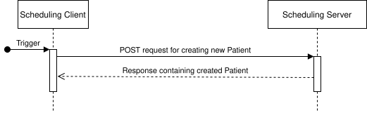
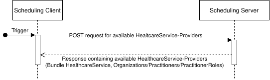
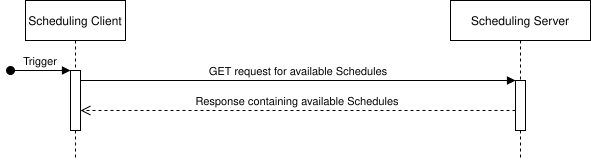
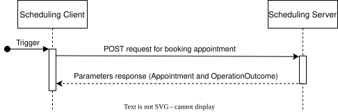
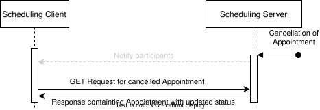
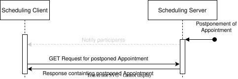
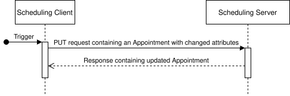
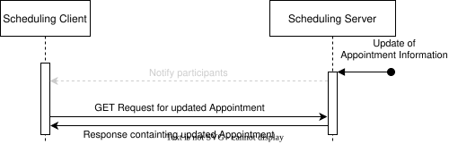

Austrian Appointment Scheduling (R5)
1.0.0 - Informative
Austrian Appointment Scheduling (R5)
1.0.0 - Informative
This page is part of the Austrian Appointment Scheduling (R5) (v1.0.0: Release) based on FHIR (HL7® FHIR® Standard) v5.0.0. This is the current published version. For a full list of available versions, see the Directory of published versions
The following diagram shows how the Ressources and Profiles relevant to this Implementation Guide are related to each other.
flowchart LR %% Core scheduling backbone Schedule["Schedule
HL7 AT Scheduling Schedule Profile"]:::sched Slot["Slot
HL7 AT Scheduling Slot Profile"]:::slot Appointment["Appointment
HL7 AT Scheduling Appointment Profile"]:::appt %% Service + participants HealthcareService["HealthcareService
HL7 AT Scheduling HealthcareService Profile"]:::svc Patient["Patient
HL7 AT Core Patient Profile"]:::core RelatedPerson["RelatedPerson
FHIR R5 RelatedPerson"]:::core Practitioner["Practitioner
HL7 AT Core Practitioner Profile"]:::core PractitionerRole["PractitionerRole
HL7 AT Core PractitionerRole Profile"]:::core Organization["Organization
HL7 AT Core Organization Profile"]:::core Location["Location
HL7 AT Core Location Profile"]:::core %% Relationships Schedule/Slot/Appointment Schedule -->|"defines availability for"| Slot Slot -->|"is booked by"| Appointment Schedule -. "serviceType
CodeableReference(HealthcareService)" .-> HealthcareService Schedule -. "actor
Reference(Patient)" .-> Patient Schedule -. "actor
Reference(Practitioner)" .-> Practitioner Schedule -. "actor
Reference(PractitionerRole)" .-> PractitionerRole Schedule -. "actor
Reference(RelatedPerson)" .-> RelatedPerson Schedule -. "actor
Reference(HealthcareService)" .-> HealthcareService Schedule -. "actor
Reference(Location)" .-> Location %% Relationships Appointment -> participants Appointment -->|"subject
Reference(Patient|Group)"| Patient Appointment -. "participant.actor
Reference(Patient)" .-> Patient Appointment -. "participant.actor
Reference(RelatedPerson)" .-> RelatedPerson Appointment -. "participant.actor
Reference(Practitioner)" .-> Practitioner Appointment -. "participant.actor
Reference(PractitionerRole)" .-> PractitionerRole Appointment -. "participant.actor
Reference(HealthcareService)" .-> HealthcareService Appointment -. "participant.actor
Reference(Location)" .-> Location Appointment -. "serviceType
CodeableReference(HealthcareService)" .-> HealthcareService Appointment -. "slot
Reference(Slot)" .-> Slot %% PractitionerRole context PractitionerRole -->|"practitioner"| Practitioner PractitionerRole -->|"organization"| Organization PractitionerRole -. "healthcareService" .-> HealthcareService %% Location context Location -->|"managingOrganization"| Organization %% Clickable links click Schedule href "/StructureDefinition-at-scheduling-schedule.html" "Open Schedule profile" _self click Slot href "/StructureDefinition-at-scheduling-slot.html" "Open Slot profile" _self click Appointment href "/StructureDefinition-at-scheduling-appointment.html" "Open Appointment profile" _self click HealthcareService href "/StructureDefinition-at-scheduling-healthcareService.html" "Open HealthcareService profile" _self click Patient href "https://fhir.hl7.at/HL7-AT-FHIR-Core-R5/StructureDefinition-at-core-patient.html" "Open Patient profile" _blank click RelatedPerson href "https://hl7.org/fhir/relatedperson.html" "Open RelatedPerson resource" _blank click Practitioner href "https://fhir.hl7.at/HL7-AT-FHIR-Core-R5/StructureDefinition-at-core-practitioner.html" "Open Practitioner profile" _blank click PractitionerRole href "https://fhir.hl7.at/HL7-AT-FHIR-Core-R5/StructureDefinition-at-core-practitionerRole.html" "Open PractitionerRole profile" _blank click Organization href "https://fhir.hl7.at/HL7-AT-FHIR-Core-R5/StructureDefinition-at-core-organization.html" "Open Organization profile" _blank click Location href "https://fhir.hl7.at/r5-core-main/StructureDefinition-at-core-location.html" "Open Location profile" _blank %% Styles classDef sched fill:#e1f5fe classDef slot fill:#f3e5f5 classDef appt fill:#e8f5e8 classDef svc fill:#fff3e0 classDef core fill:#f5f5f5
| Resource | Description |
|---|---|
| Schedule | A container for slots of time that may be available for booking appointments. |
| Slot | A slot of time on a schedule that may be available for booking appointments. |
| Appointment | A booking of a healthcare event among patient(s), practitioner(s) and/or related person(s) for a specific date/time. |
| HealthcareService | Details of services available, referenced by schedules and appointments. |
| Patient | Subject of care receiving the appointment. |
| RelatedPerson | Person involved in patient's care (e.g., guardian). |
| Practitioner | Healthcare professional participating in scheduling. |
| PractitionerRole | Role of practitioner within an organization for services. |
| Organization | Entity managing practitioners, locations, or services. |
| Location | Physical site for services and appointments. |
Due to the potentially large amount of data, paging SHALL be used for all interactions with HTTP method GET. For the correct usage of paging see official documentation.
In typical appointment booking systems appointment-related messages are sent via various channels (e.g. email, text message). Because this implementation guide allows chaining multiple Scheduling Servers cascadingly, the necessity arises to coordinate which Scheduling Server is responsible for sending those messages. By default the Scheduling Server, that also persists Appointments, SHOULD be the one that also sends the Appointment-related messages. However, service providers of Scheduling Servers MAY also have different bilateral arrangements, which are managed outside of the scope of this implementation guide.
Note: The actual transmission of notifications or reminders to Patients (e.g., sending SMS or emails) is out of scope of this implementation guide.
When referencing resources across systems, implementers should prefer identifiers over logical IDs. Logical IDs (the Resource.id element) are unique only within a single FHIR server and may change if the resource is copied or migrated. In contrast, identifiers (Resource.identifier) are stable values designed for use across different systems and contexts (e.g. social insurance number). Using identifiers promotes interoperability, ensuring consistent and reliable linkage of data between independent FHIR implementations.
Scheduling Clients SHALL use the following HTTP request Prefer Header for requests of standard POST and PUT interactions:
Prefer: return=representation
Scheduling Servers SHALL respond to POST and PUT requests of standard interactions with the full resource in the response body as described here.
This implementation guide supports the following interactions for a scheduling process.

A Scheduling Client can create a Patient on a Scheduling Server. This is a prerequisite for booking an Appointment in which this Patient participates. The HL7® AT Core Patient Profile SHALL be used by both the Scheduling Client for the request as well as the Scheduling Server in the response.

A Scheduling Client can fetch bookable HealthcareServices from a Scheduling Server. Search parameters of the HL7® AT Scheduling HealthcareService Profile can be used to filter the results. If no search filter for the active attribute is provided, the Scheduling Server SHALL respond with resources where the value of the active attribute is true or not present.
Example URL for filtering HealthcareServices by service-type:
https://example.com/R5/HealthcareService?service-type=http://hl7.at/fhir/TC-FHIR-AG-Scheduling-R5/R5/ValueSet/AtSchedulingServiceType|65

Depending on the scheduling scenario that is implementented ("peer-to-peer" appointment booking, availability of a central platform for scheduling, …), it might not only be necessary to find offered Healthcare Services, but also to find the medical institution offering the respective service. Additionally, finding Healthcare Service Providers that offer a service close to a location or within a certain zip-code area might be useful as well.
For such a purpose, this IG provides a new operation called $findHSP (find Healthcare Service Provider).
This operation uses either a full HealthCareService resource as input parameter or dedicated codes for it like HealthcareService.category, HealthcareService.type or HealthcareService.specialty.
In addition to that a Scheduling Client can provide further filter criteria in its search like:
The response will be a Bundle consisting of the HealthcareService resource and a list of Healthcare Service Providers (Organization, Practitioner, PractitionerRole) that offer the requested service.

After (optional) selection of a HealthcareService a Scheduling Client can fetch available Schedules. The Schedule resource provides a container for (time)-Slots that can be booked using an Appointment. One Schedule applies to one service or resource that can be booked and contains multiple Slots indicating the availability of this service/resource. A real-world analogue of a Schedule is a calendar column (for a single resource or service). For a more detailed description, refer to Schedule. Search parameters of the HL7® AT Scheduling Schedule Profile can be used to filter the results. If no search filter for the active attribute is provided, the Scheduling Server SHALL respond with resources where the value of the active attribute is true or not present.
Example URL for filtering Schedules by service-type, actor with identifier and date:
https://example.com/R5/Schedule?service-type-reference=http://hl7.at/fhir/TC-FHIR-AG-Scheduling-R5/R5/ValueSet/AtSchedulingServiceType|65&actor=urn:oid:1.2.40.0.10.1.4.3.2|987654321&date=eq2026-04-07

After selecting one or more Schedules, available Slots for this/those Schedules can be fetched. The Slot is one unit of time on a Schedule and represents the smallest unit of time that the service or resource can be booked for. A real-world analogue of a Slot would be the rows in a calendar column. For a more detailed description, refer to Slot. Search parameters of the HL7® AT Scheduling Slot Profile can be used to filter the results.
Example URL for filtering Slots by service-type, actor with identifier and date:
https://example.com/R5/Slot?schedule=Schedule/HL7ATSchedulingScheduleExample01&service-type-reference=http://hl7.at/fhir/TC-FHIR-AG-Scheduling-R5/R5/ValueSet/AtSchedulingServiceType|65&date=ge2026-04-07&date=le2026-04-14

In this optional step, a Slot can be requested to be put on hold (i.e. reserved) by a Scheduling Client until the Appointment is booked. $hold is the corresponding operation definition. The Slot is identified either by a Reference or one or more Identifiers, which have to identify a single Slot instance. For creating a hold on a Slot, the parameter slot-status SHALL have the value busy-tentative. For releasing the hold on a previously reserved Slot, slot-status SHALL have the value free. The response contains the Slot resource and an OperationOutcome. In case of successful creation of the hold, the status of the Slot is set to busy-tentative and the response SHALL contain a parameter held-until with type dateTime, signaling, when the hold expires automatically. The Scheduling Server decides how long a Slot is held. If the Slot was successfully released, the status is set to free. If the hold operation is rejected, due to another Scheduling Client consuming the Slot by booking an Appointment or creating a hold on the Slot, the status of the Slot is set to busy-unavailable.

The Scheduling Client books an Appointment by sending an HL7® AT Scheduling Appointment Profile resource with status proposed to the Scheduling Server. The Scheduling Server returns a Parameters response containing the requested Appointment and an OperationOutcome. The Appointment resource will have an updated status of booked if the request is approved, pending if it needs to be manually confirmed or cancelled if it is rejected. The corresponding operation definition is the $book operation.

To cancel an Appointment, the Scheduling Client sends an HL7® AT Scheduling Appointment Profile with its status set to cancelled or entered-in-error. The Scheduling Server responds with the Appointment resource or an OperationOutcome in case of error. If the Appointment was cancelled successfully, the status of the Slot to which the Appointment refers should be set to free again, Slot.status=free.

When an Appointment is cancelled on the Scheduling Server it's status is set to cancelled. The Scheduling Server is responsible for notifying participants of the Appointment (e.g. via email, text message or push notification) about the cancellation. Scheduling Clients then can fetch the updated Appointment (see Find existing Appointments). If the Appointment was cancelled successfully, the status of the Slot to which the Appointment refers should be set to free again, Slot.status=free.
This interaction moves an existing Appointment to a different time by changing its start, end, optionally minutesDuration and the referenced slot. To change other information of the Appointment, use the Update Appointment interaction instead.

To postpone an Appointment, the Scheduling Client sends an HL7® AT Scheduling Appointment with updated values for start, end, optionally minutesDuration and the referenced slot. The Scheduling Server responds with the updated Appointment resource or an OperationOutcome in case of error.
Because postponing an Appointment changes the time it occupies, the Slots referenced by the Appointment are affected as well. If the postponement is successful, the status of the Slot to which the Appointment previously referred should be set to free again, Slot.status=free, while the Slot covering the new time should be marked as occupied, Slot.status=busy. Keeping the Slot statuses in sync with the Appointment is the responsibility of the Scheduling Server.

When an Appointment is postponed on the Scheduling Server, the values for start, end and optionally minutesDuration are updated. The Scheduling Server is responsible for notifying participants of the Appointment (e.g. via email, text message or push notification) about the postponement. Scheduling Clients then can fetch the updated Appointment (see Find existing Appointments). As with postponement by the Scheduling Client, the affected Slots are updated accordingly: the Slot to which the Appointment previously referred should be set to free again, Slot.status=free, while the Slot covering the new time should be marked as occupied, Slot.status=busy.
This interaction updates the information (metadata) of an existing Appointment, such as description, note, patientInstruction, priority or the non-Patient participants. The following SHALL NOT be changed via this interaction:
participant[HL7ATCorePatient]);start, end, minutesDuration, slot) — use the Postpone Appointment interaction instead;serviceType and the referenced HealthcareService) — cancel the Appointment (see Cancel Appointment) and book a new one (see Book Appointment) instead.
The Scheduling Client sends a HL7® AT Scheduling Appointment Profile resource with the updated attributes, respecting the restrictions above. The Scheduling Server responds with the updated Appointment resource or an OperationOutcome in case of error.

The Scheduling Server may update the same attributes, subject to the same restrictions, and is responsible for notifying participants of the Appointment (e.g. via email, text message or push notification) about the update, if the changed information requires informing them. Scheduling Clients then can fetch the updated Appointment (see Find existing Appointments).

Scheduling Clients can fetch existing Appointments from Scheduling Servers. Search parameters of the HL7® AT Scheduling Appointment Profile can be used to filter the results.
Example URL for filtering Appointments by date and actor with Austrian Social Security Number:
https://example.com/R5/Appointment?actor:identifier=urn:oid:1.2.40.0.10.1.4.3.1|1234010100&date=ge2026-04-07&date=le2026-04-14